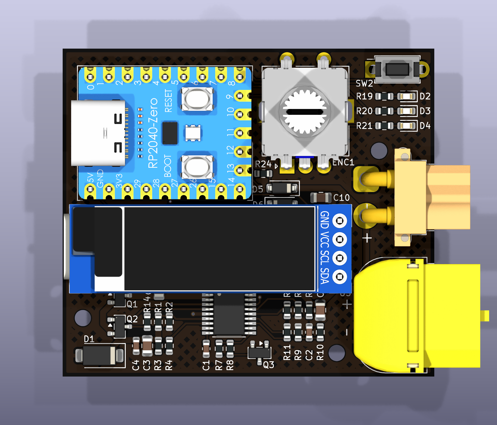

ドローンの初回通電を、勘ではなく数値で確認する。
電流・電圧・ピーク電流・負荷抵抗を見ながら、異常の有無と状態を切り分けるためのショートストッパーです。
順番が大切です。充電器をつなぐ → 設定する → 機体をつなぐ → ボタンを短く押してチェック → もう一度押して通電。止めてから機体を外します。
先に充電器を接続して電流上限と電圧を決め、そのあとで機体をつなぎます。機体を外すときは、必ずボタンで出力を止めてからにしてください。
出力を止めるとき・機体を外すときは、必ず先にボタンを押して出力を停止してください。保護機能は入力に電源が来ている間だけ働きます。
入力はUSB-C PD充電器専用です。出力側にバッテリーが接続された状態でも使用しないでください。
すでに短絡している機体では、遮断が間に合わず部品が損傷する場合があります。異常を検出するための保護治具として使用してください。
市販のショートストッパーが「光る／光らない」で終わるのに対し、この製品はどれだけ電流が流れたかを数値で確認できます。
| 機能 | できること |
|---|---|
| 電源 | USB-C PD充電器から9V / 15V / 20Vを取得。3S〜5S相当の確認に対応 |
| 電流制限 | 0.1 / 0.3 / 0.5 / 0.8 / 1.2Aの5段階 |
| 計測 | 電圧・電流・ピーク電流・負荷抵抗を表示 |
| 事前診断 | 通電前に出力側の短絡を確認できる |
上から見た図です。番号と下表を対応させて確認してください。

1 の USB-C は表示部の下に隠れており、左側面にわずかに見えています
| No. | 部品 | 役割 |
|---|---|---|
| 01 | USB-C入力 | PD対応充電器を接続。基板左側面、表示部の下にあります |
| 02 | XT60出力 | 機体を接続 |
| 03 | XT30出力 | XT30機体用。XT60と同じ出力。同時接続不可 |
| 04 | 表示部 | 電流・電圧・状態を表示 |
| 05 | コントローラー | 側面USB-Cは記録用。通電には使用しない |
| 06 | ダイヤル | 回して選択、押し込んで決定。押し込みスイッチを内蔵しています |
| 07 | ボタン | 通電・停止・遮断解除・通電前チェック |
| 08 | ランプ | 緑・黄・赤で状態を表示 |
9V / 15V / 20V対応。ノートPC用の45W以上を推奨。
PD対応品を使用。充電専用の細いケーブルは避けてください。
XT60 または XT30。
基板が露出している場合は金属面に置かないでください。底面ケースに取り付けて使用。
その電圧は、接続しているPD充電器が出力できません。対応する充電器に交換してください。
最初は0.5Aから。低い上限で安全側から確認し、必要な場合だけ一段ずつ上げます。
全部を覚える必要はありません。まず 電流・LIM・PK・LOAD を見れば、異常の切り分けができます。
0.42A 20.00V
LIM 0.50
LOAD 24.1 PK 0.23
RUN SRC USB-PD通電中の表示例
| 表示 | 意味 | 見るポイント |
|---|---|---|
| 0.42A | 現在の電流 | いま機体がどれだけ電流を消費しているか |
| 20.00V | 入力電圧 | 設定したPD電圧が出ているか |
| LIM 0.50 | 電流上限 | 遮断ライン |
| LOAD 24.1 | 負荷抵抗（Ω） | 異常切り分けの手がかり。1000Ω以上はk表示、測定不能は --- |
| PK 0.23 | ピーク電流 | 立ち上がり時を含む最大電流 |
| RUN | 状態 | 現在の動作状態 |
| SRC USB-PD | 電源種別 | USB-PDから給電中。SRC BATTERY はUSB-C以外から電圧が入っている状態 |
| 状態 | 意味 |
|---|---|
| READY | 待機中。出力OFF |
| RAMP | 立ち上げ中。機体のコンデンサを充電 |
| RUN | 正常に通電中 |
| LIMIT | 電流が上限に近づいている |
「最初から最大」ではなく、落ちたら一段上げる。これだけで機体の挙動をかなり切り分けやすくなります。
| 上限 | おすすめの使い方 |
|---|---|
| 0.1A | 最も厳しい設定。基板単体やFCの確認に |
| 0.3A | 小型機、または慎重に確認したい場合 |
| 0.5A | 基本設定。まずここから |
| 0.8A | 0.5Aで遮断するが、機体が正常そうな場合 |
| 1.2A | 最大設定。ここでも遮断するなら機体側の問題を疑う |
同じ構成の機体なら、アイドル電流やピーク電流はおおむね同じ値になります。正常機の数値を記録しておけば、次回から比較で異常を見つけやすくなります。
電源を本格的に入れる前に、出力側の短絡を確認します。結果が出るまで1〜2秒かかります。
PRE-POWER CHECK 0.9R SHORT hold=force
ボタンを短く押すと開始。結果表示後、ボタンで通電／ダイヤルで中止。
| 表示 | 意味 | 対応 |
|---|---|---|
| OPEN | 何もつながっていない | 機体が接続されているか確認 |
| OK | 異常なし | 通電して構いません |
| SUSPECT - check | 抵抗が低め | 原因を確認してから判断 |
| SHORT hold=force | 短絡 | 通電しない。まず短絡箇所を確認。短押しでは通電できません。どうしても通す場合のみ長押しで強行できます |
| EXT VOLTAGE - abort | 出力側に電圧が残っている | 機体のバッテリーが接続されたままでないか確認。直前に通電した場合は、放電するまで待ってやり直してください |
| ランプ | 状態 | 意味 |
|---|---|---|
| ● 緑 点灯 | 待機 / 正常通電 | 通常状態 |
| ● 緑 点滅 | 立ち上げ中 | コンデンサを充電中 |
| ● 黄 点灯 | 上限接近 | 電流が上限に近づいている |
| ● 赤 点滅 | 遮断 | 点滅回数が原因を示す |
TRIP OVER CURRENT ──────────────────── 20.00V 0.62A LOAD 1.2 push=clear
ボタンを押すと遮断が解除され、待機に戻ります
| 回数 | 画面 | 原因 | 対応 |
|---|---|---|---|
| 1 | OVER CURRENT | 電流が上限超過 | 上限を一段上げて再試行。それでも落ちるなら機体側の異常を確認 |
| 2 | OVER VOLTAGE | 入力電圧が高すぎる | 充電器を確認 |
| 3 | IC THERMAL | 内部高温 | 数分冷却。繰り返す場合は電流を下げる |
| 4 | INPUT LOW | 入力電圧低下 | 充電器容量またはケーブルを確認 |
機体が立ち上がらなかった場合も過電流として扱います。出力電圧が持ち上がらない＝どこかで短絡している可能性があります。まず通電前チェックを行ってください。
「落ちた」で終わらせず、LOADの値を手がかりに原因を絞ります。
| LOAD | 読み取り |
|---|---|
| 1Ω 前後 | 完全な短絡が疑われる |
| 数Ω | 異常が疑われる。ESCのFETが片側だけ壊れた場合など |
| 数十Ω | おそらく正常。電流設定が低すぎる可能性もある |
| --- | ほとんど電流が流れていない。正常または未接続の可能性 |
表示値だけで故障部品を断定せず、正常機との比較や通電前チェックと組み合わせて判断してください。
電流制限中の出力電圧を、流れている電流で割って負荷抵抗を求めています。
| 操作 | 状態 | 動作 |
|---|---|---|
| ボタンを押す | READY | 通電前チェックを開始 |
| ボタンを押す | 通電中 | 停止 |
| ボタンを押す | 遮断後 | 遮断を解除して待機へ |
| ボタンを押す | チェック結果の表示中 | 通電。SHORT のときは受け付けません |
| ボタンを押す | 設定画面 | 変更を取り消して待機へ戻る |
| ボタン長押し | READY | 約1秒押してから離すとチェックを飛ばして通電 |
| ボタン長押し | チェック結果の表示中 | SHORT でも強行して通電 |
| ダイヤルを押す | READY / 通電中 | 設定画面へ。通電中の場合は出力が切れます |
| ダイヤルを押す | 設定画面 | 次の項目へ。最後の項目で決定し、待機へ戻ります |
| ダイヤルを押す | チェック結果の表示中 | 通電せず待機へ戻る |
| ダイヤルを回す | 設定画面 | 値を変更 |
ボタンは離した瞬間に効きます。短く押すと通電前チェック、約1秒以上押してから離すと通電です。誤って触れても、いきなり電気が流れることはありません。
USB-C充電器がPD対応か、ケーブルが充電専用の細いものではないか確認してください。
電流上限が低すぎるか、機体が短絡している可能性があります。まず通電前チェック。OKなら上限を一段上げて確認します。
入力電圧が低下しています。充電器容量不足またはケーブルの電圧降下を確認してください。
NOT on this chargerは、接続中の充電器がその電圧を出力できないという意味です。
USB-C PDの制御部と通信できていません。電圧を選べず通電もできない状態です。故障の可能性があるためご連絡ください。
機体のコンデンサに電荷が残っています。放電まで数分かかることがあります。充電されたままでは正しい抵抗値を測れないため、あえて中止しています。
安全のため、設定画面に入ると出力を切ります。設定後にもう一度ボタンを押して通電してください。
設定保存には対応していません。毎回設定してください。
機体側コンデンサに残った電荷です。しばらくすると消えます。
設定画面に入っているか確認してください。待機中はダイヤルを回しても値は変わりません。
| 項目 | 仕様 |
|---|---|
| 基板リビジョン | Rev1.1 |
| 入力 | USB-C PD 9V / 15V / 20V |
| 入力電圧範囲 | 6.5V〜27V |
| 出力 | XT60 / XT30（内部で共通） |
| 電流上限 | 0.1 / 0.3 / 0.5 / 0.8 / 1.2 A |
| 遮断 | ラッチ式（ボタンで解除） |
| 表示 | 有機EL 0.91インチ / 128×32 |
| 基板寸法 | 50.6 × 44.7 mm |
| ケース込み寸法 | 55.2 × 49.3 × 6.6 mm（コネクタ突出を除く） |
基板裏面に SmokeStopper Rev1.1 と印字があります。別のリビジョンでは電流上限や表示画面が異なりますので、対応する説明書をご覧ください。
USB-C PDの規格上、この製品が要求できる電圧は20Vまでです。6S機でも、ESCやFCの生存確認・短絡検出は20Vで行えます。
上級者向け。コントローラー側面のUSB-CをPCにつなぐと、0.2秒ごとの測定値をCSV形式で出力できます。
12840,3,20.012,19.874,0.421,24.1,0 │ │ │ │ │ │ └ 遮断理由 │ │ │ │ │ └ 負荷抵抗 Ω │ │ │ │ └ 電流 A │ │ │ └ 出力電圧 V │ │ └ 入力電圧 V │ └ 状態 └ 経過時間 ms
通信速度：115200bps / 出力間隔：0.2秒